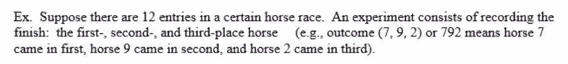
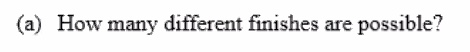
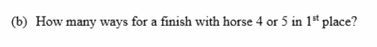
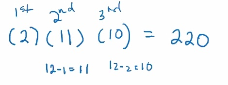
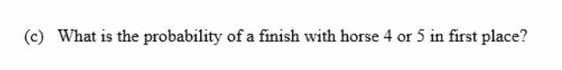
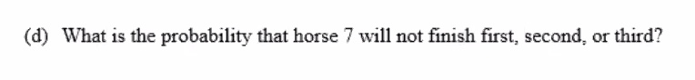
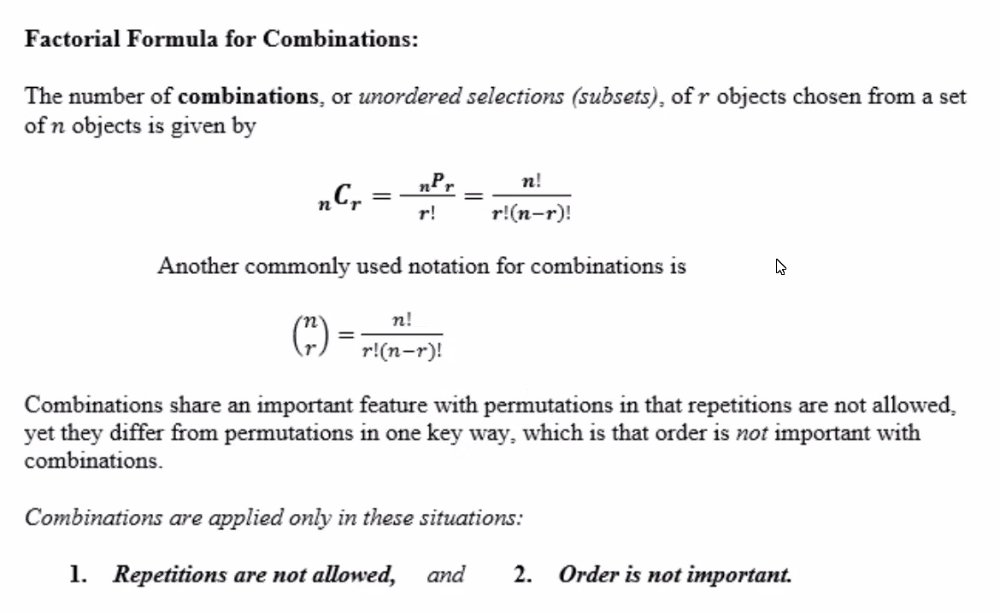
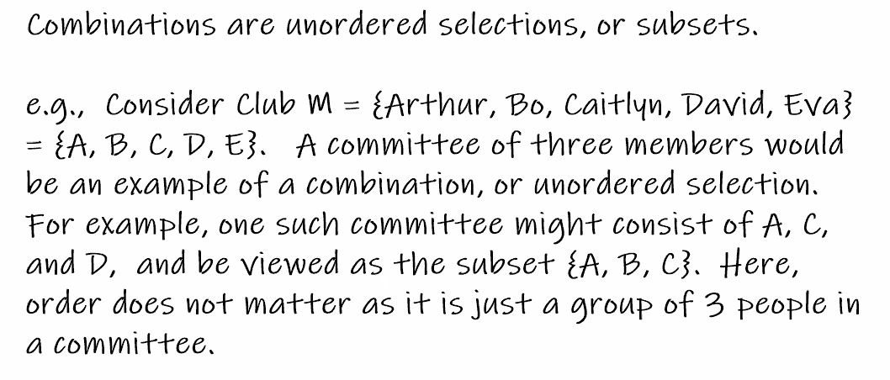
Use the combinations formulat to determine the number of different size-3 committees (subsets) that could possibly be made from Club
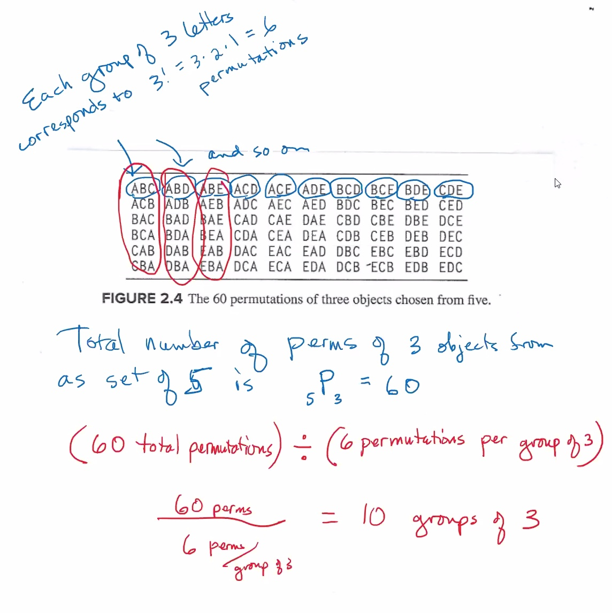
How many different ways are there to select a jury of 12 people from a pool of 20?
Assume that in a class of 12 students, a project is assigned in which the students will work in groups. 3 groups are formed, consisting of 5, 4, and 3 students. Find the number of ways in which the groups can be formed.
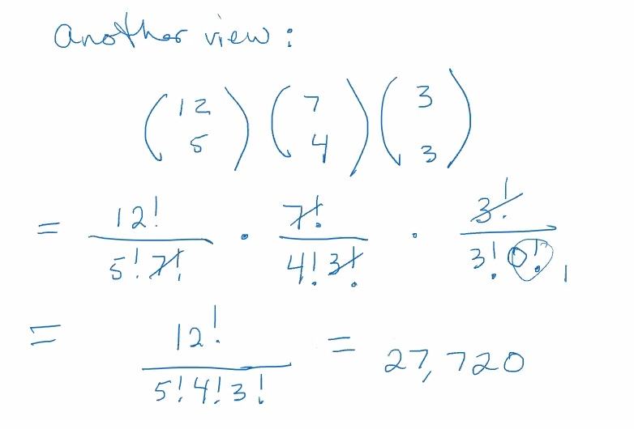
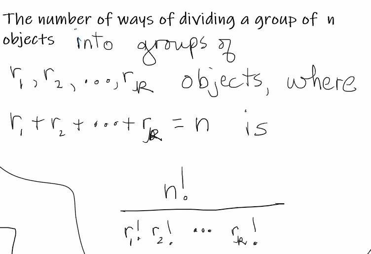